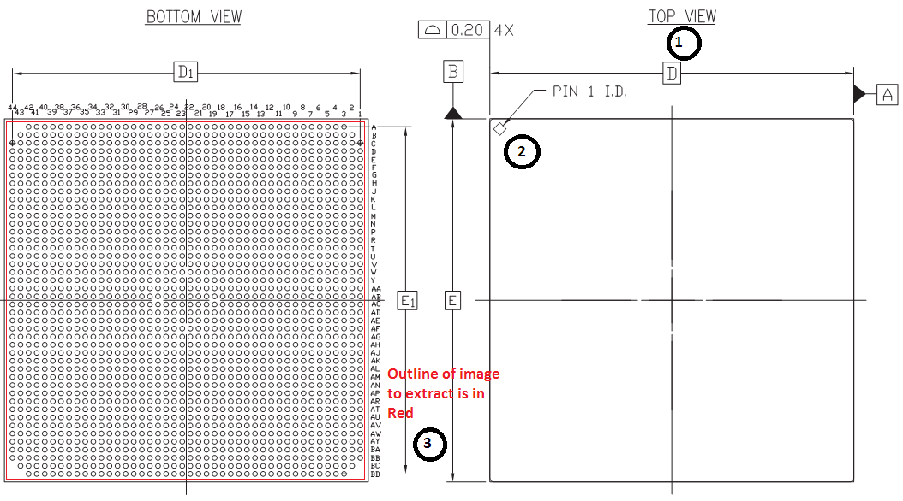

Figure 2: Snapshot Tool in Adobe Reader

Generating footprints with AutoBGA is easy. All you need is to do is extract an image of the ball pattern from the datasheet's package drawing. AutoBGA will then generate the ball coordinates using image processing and output a list of the balls present in the grid.
This short help file will guide you through the process. Furthermore, the default settings when you start AutoBGA are for an example using a picture that comes with the program. You can simply press the "Compute" button to see it in action.
Using AutoBGA is a straight-forward process. Figure 1 shows the section of a datasheet with a BGA package drawing.
Figure 1: Three steps to configuring AutoBGA |
|  |
Two views are usually presented:
From these two views, all the information required to configure an AutoBGA session is available.
The are 3 configuration steps to execute:
To extract the region displaying the balls, you can use the "snapshot" or "picture" tool available in most PDF viewers. Figures 2 and 3 show what these tools look like in two popular PDF readers. These tools copy the image to the clipboard. You can then paste the image in any image processing program such as "Paint" or "IrfanView" to save it. It must be saved as a "PNG" or "BMP" image, in either grayscale or RGB (24 or 32 bits).
Important characteristics of the image:
Figure 2: Snapshot Tool in Adobe Reader |
|
Figure 3: Snapshot Tool in Foxit PDF Reader |
 |
Once the image is saved as PNG or BMP, the filename can be entered in the "Input Image Filename" field. A preview will be shown after the grid is computed using the "Compute" button.
After the ball grid is computed, a result report will be shown and the data will be copied to the clipboard. The report contains the following 3 sections:
The TSV format lists all pads detected (occupied cells). The heading in the file specifies the column contents. Pads are not output in any specific order. Sorting can be accomplished using a spreadsheet program.
Table 1: Example of TSV output format |
||||||||||||||||||||
|
The XML format lists all pads detected (occupied cells) using an XML representation from the JFootprintTool program. The XML schema is available in the home directory of the program.
The EAGLE SCR format contains EAGLE commands to draw all the pads detected in the EAGLE library editor. Simply create a new "package" in the library editor and then run the script with the "SCR" EAGLE command. The script must be pasted in a text editor and saved before being used.